开始之前，可以通过 Vagrant构建一个CentOS环境 ，然后根据 官方文档 来安装Dokcer，下面的例子运行在CentOS7环境下。
Docker Image俗称Docker镜像，它是由一系列图层（Layer）构成的，每个图层代表Dockerfile（通过Dockerfile我们可以创建镜像）中的一行指令，镜像是只读的。
那什么是Dockerfile呢，举个简单的Dockerfile示例：
1 | FROM centos |
上面的Dockerfile包含两行命令（所以它对应两个图层），第一行表示从centos这个镜像中创建一个图层，然后第二行表示接着运行yum install -y vim来安装vim。通过这个Dockerfile我们可以构建一个镜像，通过镜像我们可以创建一个容器（Container）。
什么是Docker容器？容器是通过镜像构建的一个隔离的应用平台，它包含了运行应用程序所需要的一切。和镜像相比，它在顶部多了一层可读写图层，就如下图所示：

镜像和容器的关系就像是Java里类与对象的关系那样，镜像是构建容器的模板，容器是镜像构建出来的实例。
Docker镜像
通过docker image ls查看当前有哪些镜像（等价于docker images）：
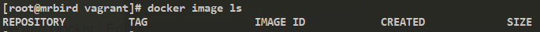
当前暂无镜像，可以通过docker pull [OPTIONS] NAME[:TAG|@DIGEST]来从 DockerHub 拉取镜像，比如拉取一个Ubuntu镜像：
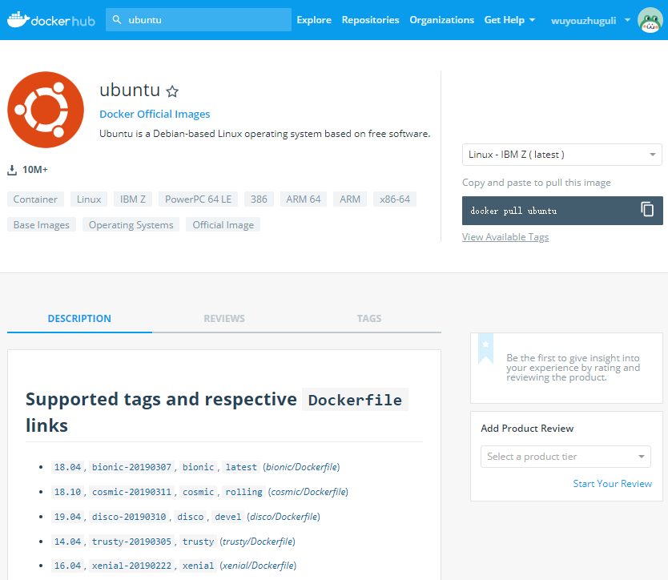
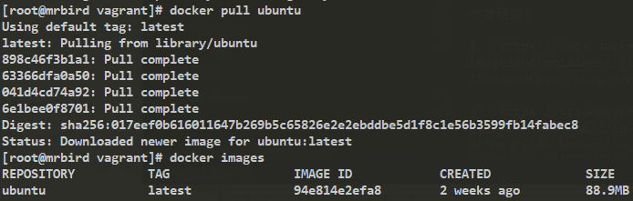
不带tag则是拉取最新的镜像，可以通过tag来指定拉取的版本，比如拉取Ubuntu16.04：
1 | docker pull ubuntu:16.04 |
可以通过docker history [OPTIONS] IMAGE来查看image的构建历史（图层）：
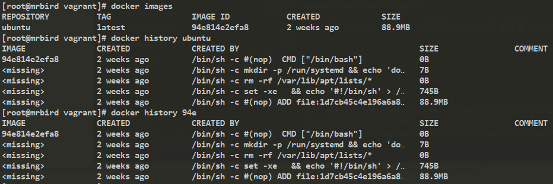
可以通过镜像的名称或者镜像ID来指定。使用镜像ID的时候，可以只指定前几位，只要能唯一标识一个镜像即可，所以上面的94e814e2efa8可以简写为94e。
删除镜像使用的命令为docker image rm [OPTIONS] IMAGE [IMAGE...]，等价于docker rmi [OPTIONS] IMAGE [IMAGE...]。
更多关于镜像的命令可以使用docker image --help来查看：
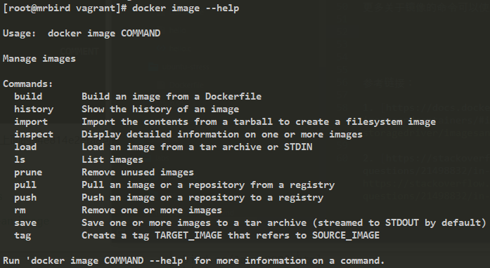
Docker容器
可以通过docker run [OPTIONS] IMAGE [COMMAND] [ARG...]命令来运行镜像，生成容器，比如运行刚刚拉去下来的ubuntu镜像，然后通过docker container ls命令查看当前正在运行的容器：
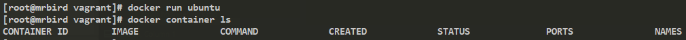
没有正在运行的容器，我们可以通过docker container ls -a命令来查看所有状态下的容器（可简写为docker ps -a）：
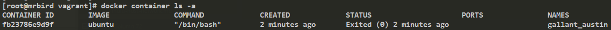
可看到，ubuntu这个容器状态为Exited退出状态，要让运行容器常驻，可以使用docker run -it命令：
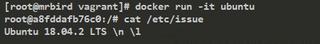
我们已经进入到ubuntu容器环境里了，可以在上面执行任何ubuntu支持的操作。
这时候新开一个cmd窗口，查看目前容器的状态：
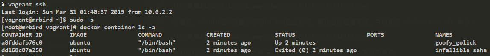
上面包含了一开始创建的exited状态的容器以及常驻内存的状态为up的容器。
退出容器环境使用exit命令即可。
可以使用docker container rm [OPTIONS] CONTAINER [CONTAINER...]命令来删除容器：
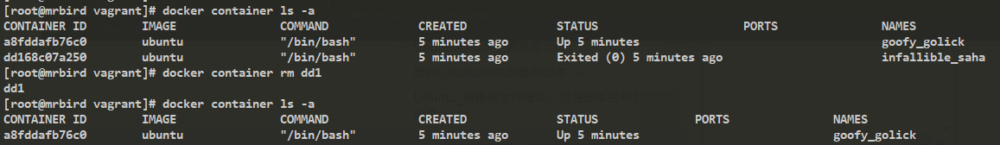
上面的命令也可以简化为docker rm dd1。
可以通过docker rm $(docker container ls -aq)命令来一次性删除全部的container，docker container ls -aq作用为列出所有container id。
可以使用docker rm $(docker container ls -f "status=xxx" -q)来删除指定状态的容器，比如仅删除状态为Exited的容器：
1 | docker rm $(docker container ls -f "status=exited" -q) |
容器状态改变
对于Exited状态的容器，我们可以使用docker container start来启动容器：
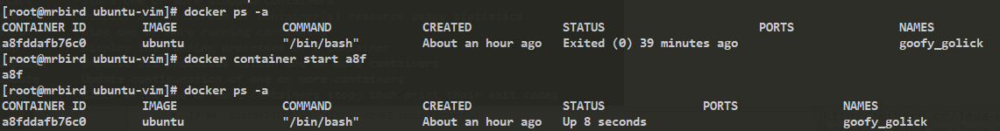
进入运行中的容器的命令为：
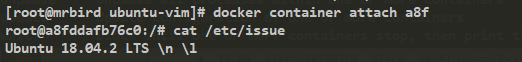
暂停容器：
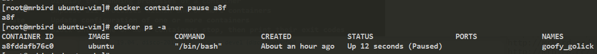
恢复容器：
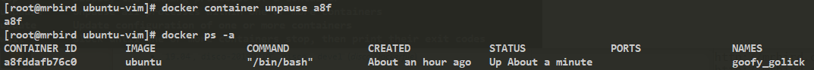
停止容器:
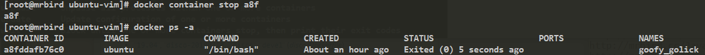
下图展示了Docker容器的完整生命周期：
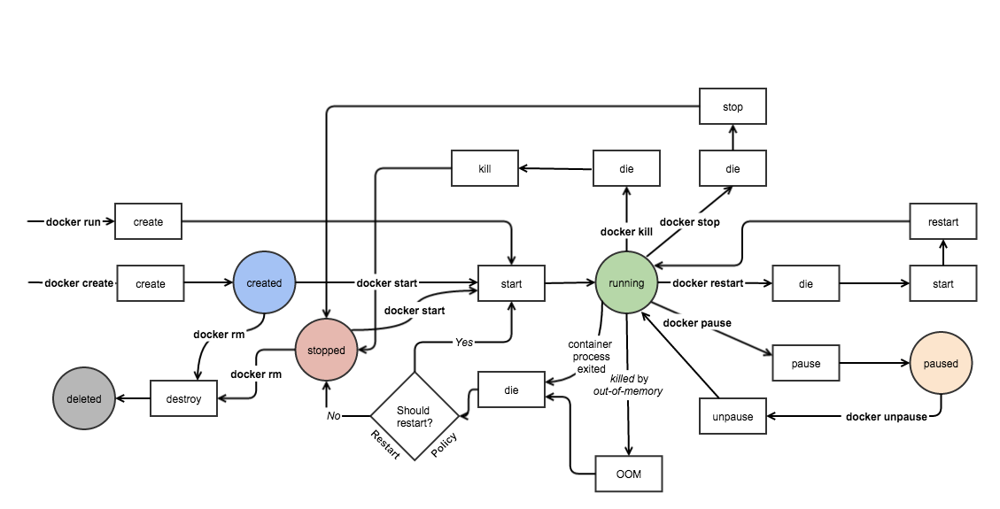
更多关于container的命令可以使用docker container --help来查看：
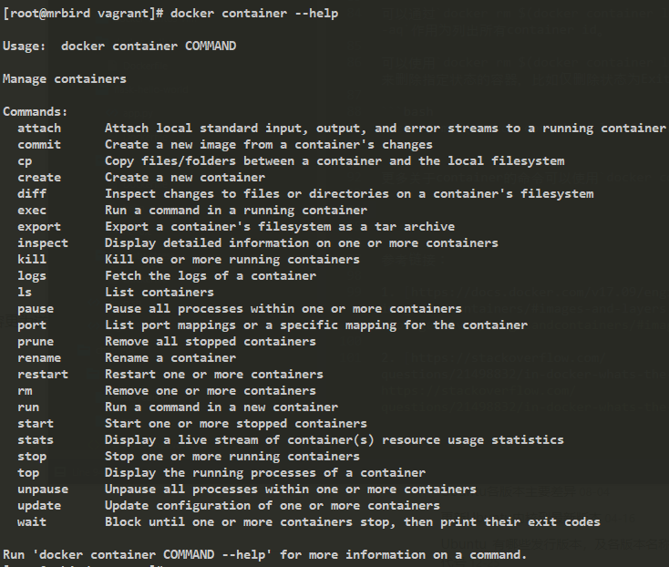
Docker镜像的构建
Docker镜像的构建有两种方式：基于容器commit和通过Dockerfile构建。
基于容器
比如我们在刚刚运行中的unubtu容器中安装vim插件：
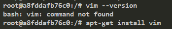
然后exit退出，使用docker commit [OPTIONS] CONTAINER [REPOSITORY[:TAG]]命令来创建一个新的镜像：
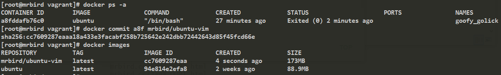
查看该镜像的history：
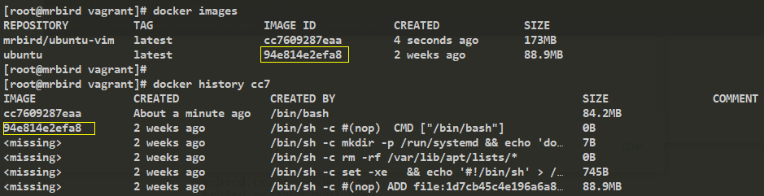
停止容器：
可以看到，它是在id为94e814e2efa8镜像上加了一层图层，id为cc7609287eaa，也就是新的镜像的id。
一般不推荐这种方式来构建镜像，因为通过修改容器commit来构建新的镜像，我们不清楚原来的容器被修改了什么（比如安装恶意软件）。推荐的做法是通过Dockerfile来构建镜像。
基于Dockerfile
新建一个目录：
1 | mkdir ubuntu-vim |
然后在该目录下编辑Dockerfile
1 | cd ubuntu-vim |
Dockerfile内容如下所示：
1 | FROM ubuntu |
意思是在ubuntu这个镜像基础上，分别运行apt-get update，apt-get install和apt-get install -y vim（-y指的是在命令行交互提示中，直接输入 yes）。
创建好这个Dockerfile后，运行下面这条命令来构建镜像：
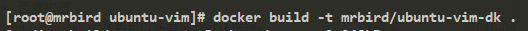
意思是通过当前目录下的Dockerfile构建进行，镜像名称为mrbird/ubuntu-vim-dk。
构建好后，查看当前镜像列表：
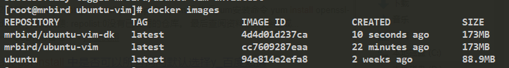
其大小和我之前通过修改容器的方式构建的镜像一样。查看其history：
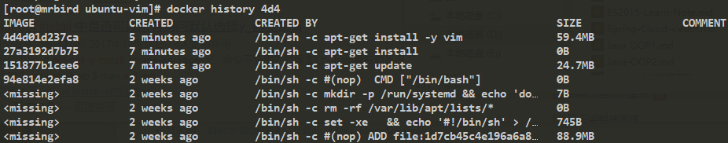
可以看到Dockerfile的每一行RUN指令都创建了一个新的图层，通过这种方式来构建镜像的好处是，我们可以通过分享Dockerfile的方式来分享容器，并且对原镜像的修改过程一目了然。
发布镜像
我们可以将本地构建的镜像发布到 Docker Hub 上。
首先得在 Docker Hub 上注册个账号：
我的id为wuyouzhuguli。
然后新建一个目录，并创建一个Dockerfile：
1 | mkdir hello |
1 | FROM centos |
接着通过这个Dockerfile构建镜像:
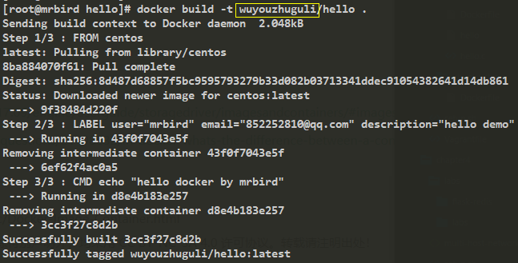
tag部分必须和上面注册账号一致。
然后使用命令docker login登录 Docker：
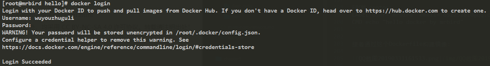
登录成功，开始push操作：
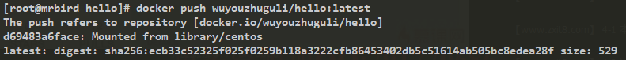
push成功，查看 Docker Hub：
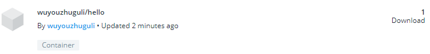
关联Github创建
除了通过docker push往Docker Hub上传镜像外，我们可以通过关联Github仓库的方式来创建镜像。
首先在Github下新建一个仓库，然后上传Dockerfile：
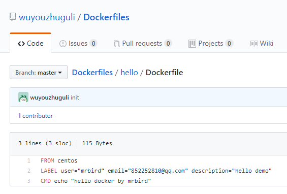
然后回到Docker Hub，新建一个仓库：
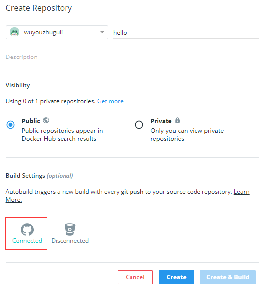
关联Github账号，然后点击Create，然后在Builds选项卡里选择Github：
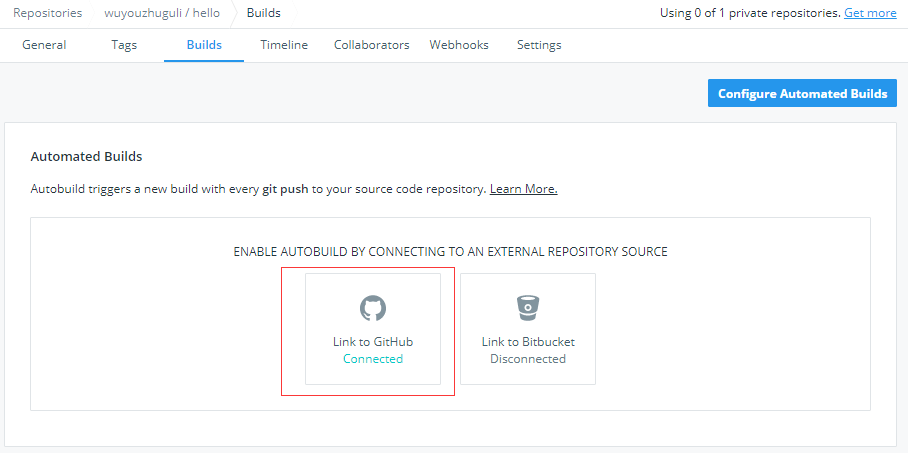
然后选择Github的Dockerfiles仓库，路径选择hello：
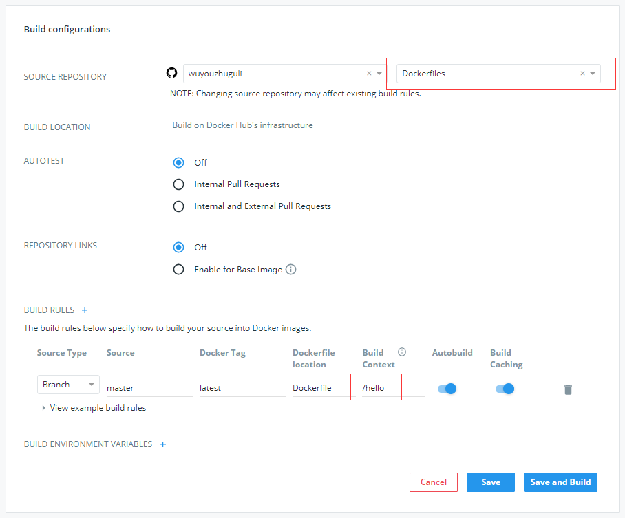
点击save and build按钮后，Docker Hub会根据关联的Github仓库下的Dockerfile来构建一个镜像：
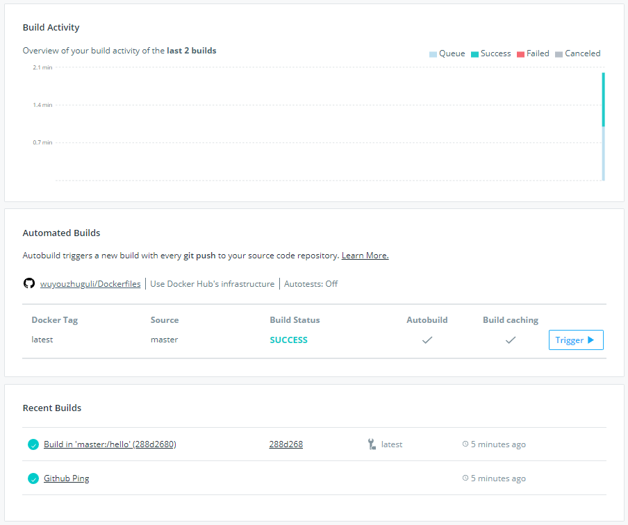
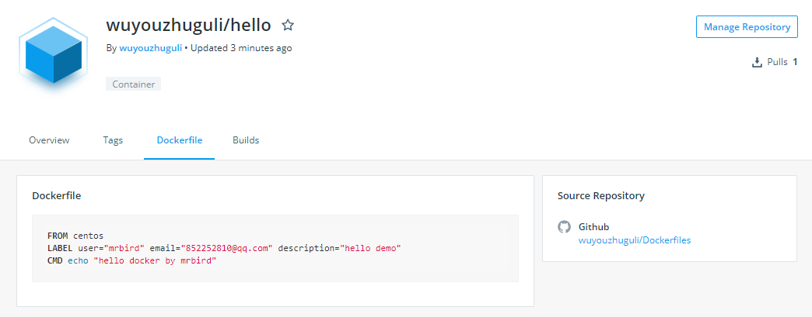
一般推荐这种方式。
参考链接：